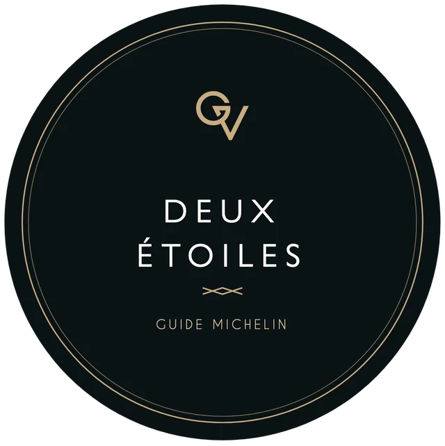
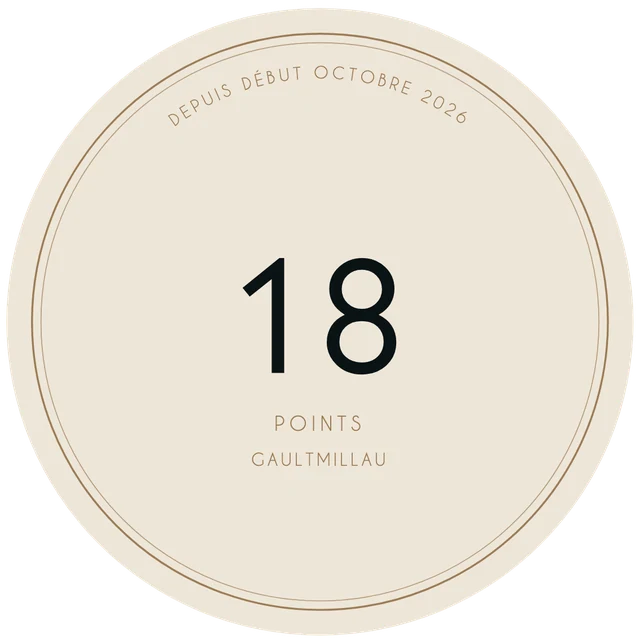
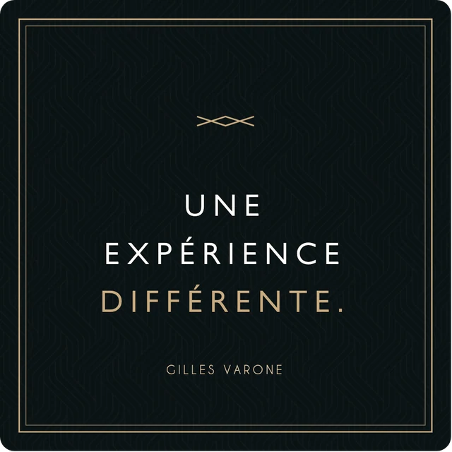
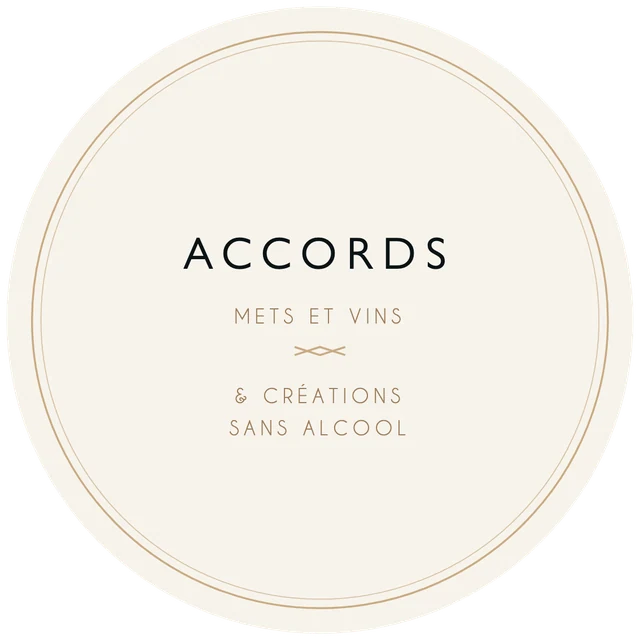
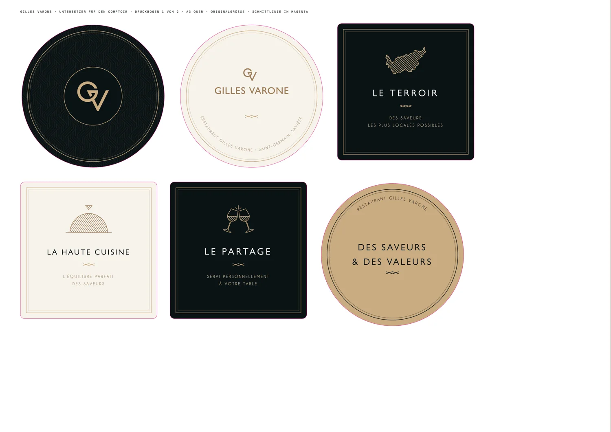

09Ideen für Papier
Zwölf Untersetzerfür den Comptoir.
Am Comptoir steht jedes Glas auf etwas Eigenem. Hier sind zwölf Untersetzer als Idee, rund und quadratisch, mit Ihrem Monogramm, dem Flechtmuster und Ihren Worten von der Seite.
01Die Untersetzer
ZwölfUntersetzer.
Nacht, Gold und Papier kommen von Ihrer Seite, das Flechtmuster von Ihren Wänden, die drei Zeichen von Ihren Werten, die Worte von Ihrer Seite. Ein Foto steht auf keinem Untersetzer.
Le monogramme
Das Monogramm GV in Gold, darum das Flechtmuster Ihrer Wände.
100 × 100 mmLa signature
Ihre Wortmarke auf Papier, unten rundherum Name und Ort.
100 × 100 mmLe terroir
Der erste Ihrer drei Werte, mit seinem Zeichen und den Saveurs les plus locales possibles.
94 × 94 mmLa haute cuisine
Der zweite Wert, Ihr Satz vom Gleichgewicht der Aromen.
94 × 94 mmLe partage
Der dritte Wert: Sie bringen den Teller selbst an den Tisch.
94 × 94 mmDes saveurs & des valeurs
Der Satz aus dem Fuss Ihrer Seite, auf Gold.
100 × 100 mm
Deux étoiles
Die zweite Michelin-Auszeichnung, nur in Worten, ohne fremdes Zeichen.
100 × 100 mm
18 points
Die 18 Punkte im GaultMillau, seit Oktober 2026.
100 × 100 mmSavièse
Das Flechtmuster als ganze Fläche, in der Mitte der Ort.
94 × 94 mm
Une expérience différente
Der erste Satz Ihrer Startseite.
94 × 94 mm
Accords
Ihre Begleitung zu jeder Expérience, mit Wein oder ohne Alkohol.
100 × 100 mmUne vue imprenable
Ihr Satz zum Saal im Erdgeschoss, mit Blick auf die Walliser Alpen.
94 × 94 mm
02Für die Druckerei
DerDruckbogen.
Alle Untersetzer liegen in Originalgrösse auf zwei Bögen im Format A3, mit einer Schnittlinie je Stück. Dazu gibt es jedes einzeln als PDF.
12 Untersetzer · 94 bis 100 mm · Schnittlinie in Magenta

Dazu gibt es 24 Drucksachen und Ihre Unterlagen im selben Stil.